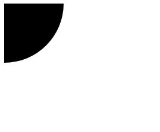

4-在网页中添加矢量图
任务目标：
了解如何嵌入SVG( Scalable Vector Graphics可缩放矢量图)到网页
位图（又称栅格图）:使用像素网格定义， 一个位图文件精确得包含了每个像素的位置和它的色彩信息。（.png，.jpg）
矢量图 （又称向量图）使用算法定义， 一个矢量图文件包含了图形和路径的定义。在数学上使用线连成的点绘图。
SVG是矢量图的一种格式(IE8以下不兼容)。
SVG 用于标记图形，而不是内容。
SVG优点：
可以无限缩放而不失真（不模糊）。
文件占用空间小。
可以被记事本等阅读器、搜索引擎访问。
可以很好地与样式/脚本交互。
SVG缺点：
SVG比位图更难创建。
复杂的SVG在浏览器处理上会占用较长时间。
最大的缺点是难以表现色彩层次丰富的逼真图像效果。
将SVG添加到页面
<img>
<img
src="equilateral.svg"
alt="triangle with all three sides equal"
height="87px"
width="100px" />
优点
缺点
跨浏览器兼容（srcset属性）
旧版浏览器加载PNG，较新的浏览器加载SVG。
<img src="equilateral.png" alt="triangle with equal sides" srcset="equilateral.svg">
CSS加载SVG（CSS加载SVG缺点与img一样）
旧版浏览器加载PNG，较新的浏览器加载SVG。
background: url("fallback.png") no-repeat center;
background-image: url("image.svg");
background-size: contain;
内联SVG（在HTML文档中的<svg>标签,自己画）
<svg width="300" height="200">
<rect width="100%" height="100%" fill="green" /></svg>
优点
缺点
SVG下的<text>元素无法实现换行，要用<foreignObject>元素！
SVG的命名空间：1、显示图形而不是文档树（文档结构），2、防止打错，元素命名冲突。
xmlns="http://www.w3.org/2000/svg"
xmlns="http://www.w3.org/2000/svg" xmlns:xlink="http://www.w3.org/1999/xlink"
或者
version="1.1" baseProfile="full" xmlns="http://www.w3.org/2000/svg"
SVG图像默认大小：300像素（宽）x150像素（高）
SVG的属性
<svg width="100" height="100" viewBox="50 50 50 50">
<circle id="mycircle" cx="50" cy="50" r="50" /></svg>
SVG 图像是100像素宽 x 100像素高，本来是整圆，但viewBox属性指定视口从(50, 50)这个点开始。所以，实际看到的是右下角的四分之一圆。

SVG下的标签
<rect>标签的x、y、width、height属性分别为：矩形左上角端点的横坐标和纵坐标，矩形的宽高
<svg width="300" height="180">
<rect x="0" y="0" height="100" width="200" style="stroke: #70d5dd; fill: #dd524b" /></svg>
<circle>标签的cx、cy、r属性分别为：横坐标纵坐标（相对于左上角原点），半径
<svg width="300" height="180">
<circle cx="30" cy="50" r="25" />
<circle cx="90" cy="50" r="25" class="red" />
<circle cx="150" cy="50" r="25" class="fancy" />
</svg>
.red {
fill: red;}
.fancy {
fill: none;
stroke: black;
stroke-width: 3pt;}
<polygan>标签绘制多边形：points属性 指定每个端点的坐标 横纵坐标（表示一个点）用逗号隔开 点与点用空格隔开
<svg width="300" height="180">
<polygon fill="green" stroke="orange" stroke-width="1" points="0,0 100,0 100,100 0,100 0,0"/></svg>
<text>标签的x、y属性：文本区块基线（baseline）起点的横坐标和纵坐标。文字的样式可以用class或style属性指定。
<svg width="300" height="180">
<text x="50" y="25">Hello World</text></svg>
SVG的CSS属性
fill：填充色
stroke：描边色
stroke-width：边框宽度
<iframe>
<iframe src="triangle.svg" width="500" height="500" sandbox>
<img src="triangle.png" alt="Triangle with three unequal sides" />
</iframe>
优点
缺点
iframe回退(fallback)机制。
SVG 和当前的网页具有相同的 origin（即网址的协议，域名[.com]，端口号相同），才能在主页面上使用 JavaScript 来操纵 SVG。
课外扩展：
视口就是viewport，指的就是网页中你看到的部分。其大小约等于浏览器窗口大小减去地址栏、标签页、工具栏的大小。某些地方定义的viewport也刨去滚动条的大小。 桌面浏览器中，视口的宽度就等于浏览器窗口的宽度。